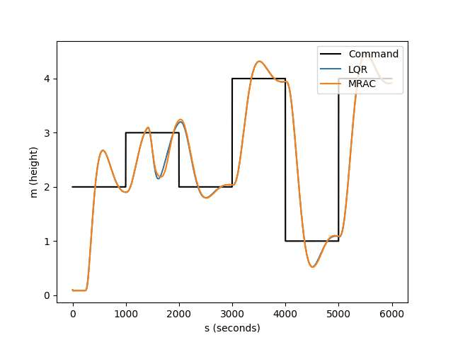
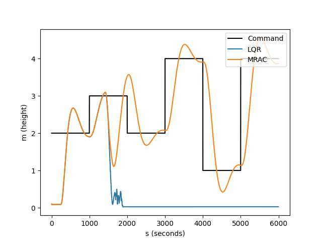

Adaptive Control
Fault-Tolerant Quadrotor Control
A drone whose motor degrades or fails mid-flight usually crashes, because its controller was tuned for the vehicle it had before the fault. This project’s objective was to keep a simulated quadrotor tracking its commanded altitude through a sudden loss of motor thrust. As a baseline, I implemented an LQR controller that tracks multi-step altitude commands in Webots. Because LQR’s fixed gains assume the nominal vehicle, I then designed a model reference adaptive controller (MRAC) that adapts its gains online so the quadrotor keeps following a reference model after the fault, and I tested both controllers under 50% and 67.2% thrust loss. At 50% loss, both controllers stayed stable and their altitude traces nearly overlapped (Figure 1). At 67.2% loss, however, LQR lost altitude and crashed partway through the command sequence, while MRAC kept following the step commands (Figure 2, Table 1). Adaptation therefore widened the range of faults the vehicle could survive without retuning, a property that matters for any robot whose actuators wear or fail in the field.


| Thrust loss | LQR baseline | MRAC |
|---|---|---|
| 50% | Stable | Stable |
| 67.2% | Crashed | Stable |